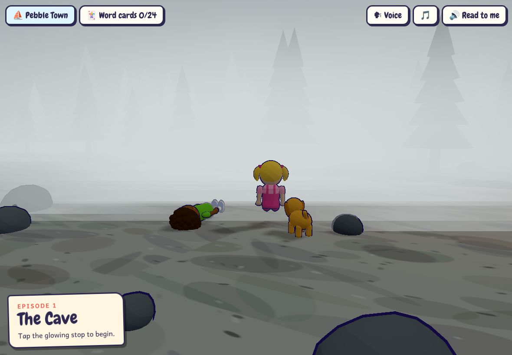
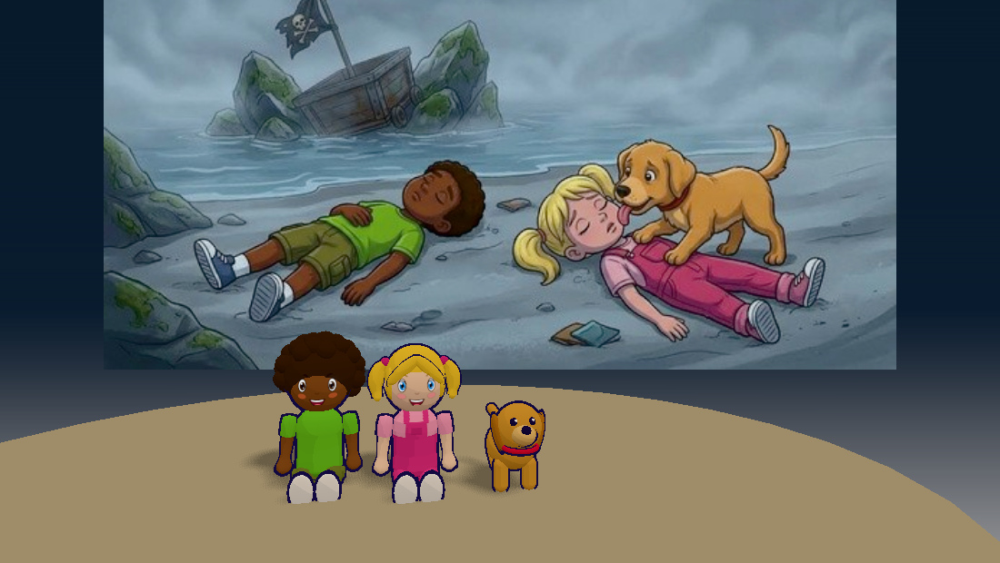

Same moment, three ways. The gap on the right is the thing to settle before any new episode.
The story illustrationPainted, muted gray-blue, soft fog, characters that read as real children with expressions and clothes that wrinkle.

Built in the game (what you rejected)Hand-built toon shapes. The scene, mood and figures do not match the art, and the fire/old man made it worse.

Today's 3D kids in front of the artQuick test: the current Leo, Mia and Toby placed against the illustration. They clash with it immediately.
Three directions to choose from
A
Illustrated scenes, 3D only where the game needs it. Each stop is the story art as a layered backdrop (sky, far, near) with gentle camera drift and fog/particle effects. Characters are cut out of the story art, not modelled. Looks exactly like the book; costs a lot of art per stop, and the kids can't walk around freely.
B
3D, redesigned to match the art. Keep walking, running and camera moves, but rebuild Leo, Mia, Toby, Jack, the old man and the two Varns with the art's proportions, faces and painted textures, and light scenes in the same gray-blue palette. The most work, and the closest the game will get to the book while staying 3D.
C
Keep the toon look, make it consistent. Accept that it is a different style from the book, but fix every character and scene to one rule set (palette, line weight, lighting) so nothing looks off-model. Quickest, but it will never feel like the story pages.
The characters are all in one place here: Character Lab.